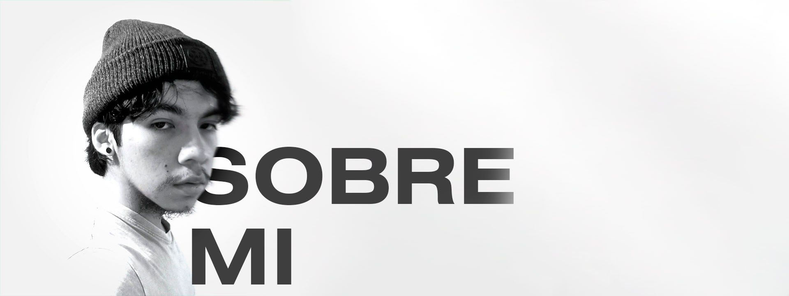
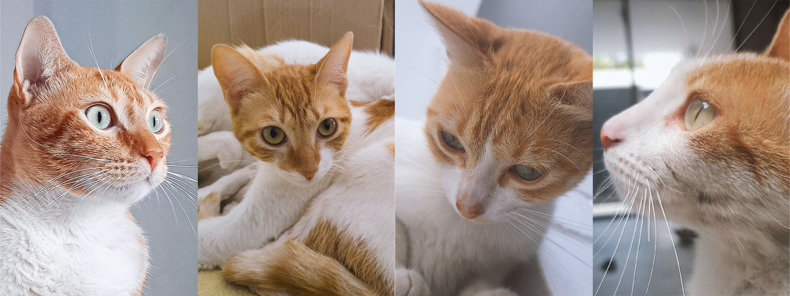

Sobre mí
Hola 👋, mi nombre es Bryan Benjamin Simon Varas, tengo 21 años y soy estudiante de Dirección y Diseño Gráfico del 7mo ciclo en la institución Toulouse Lautrec.
Mi misión como diseñador gráfico es ir más allá de solo lo estético, diseñando piezas gráficas que transmitan un mensaje claro y efectivo para la marca que lo requiera, por medio de una selección cuidadosa de colores, tipografías, composición y elementos visuales que conecten emocionalmente con el público objetivo y dejen una buena impresión.
Entre mis intereses están los juegos de mesa de estrategia como Catán y los juegos de cartas, los deportes como el bádminton o el ajedrez y también me gusta mucho escuchar música, siempre busco nuevas canciones y exploro distintos géneros.
Tengo 5 gatos, una mamá gato y sus 4 hijos que nacieron en pandemia y ya tienen 2 años. Cada uno de ellos tiene su propia personalidad única pero les gusta jugar entre ellos y arañar mis cosas.
